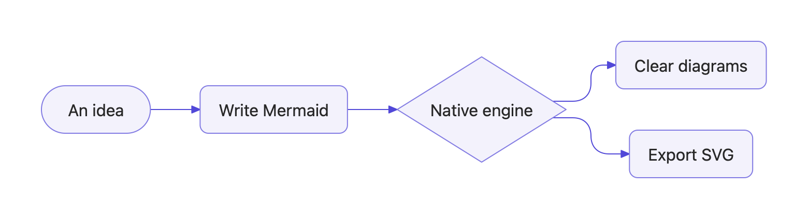
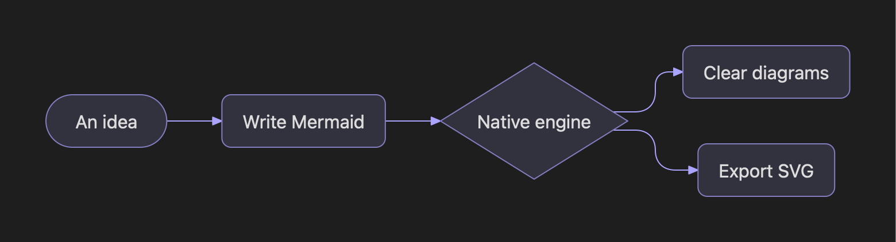

Native, all the way.
Parsing, text measurement, layout, and drawing happen in Swift. No browser runtime in your app.
BUILT WITH SWIFT. NATIVE BY DESIGN.
Mermaid diagrams, rendered natively in Swift.
From a few lines of text to a picture that makes sense.


Parsing, text measurement, layout, and drawing happen in Swift. No browser runtime in your app.
The native canvas and SVG share the same geometry. Preview your diagram, then take it with you.
Add NornaKit as a Swift Package. Parse, lay out, draw, and export diagrams directly in your app.
THE NATIVE COLLECTION
Explore real output from the native engine. Select a diagram to see its screenshot and source.
Each family includes a working example. Syntax support varies by diagram type.See support notes ↗
NATIVE DIAGRAMS FOR YOUR APP
Add NornaKit to your app for native diagram rendering and export. Norna Studio is an optional Mac tool for demos, rendering checks, debugging, and occasional exports.
Read the documentationNorna Studio currently has no Developer ID signature or Apple notarization. macOS may report that the developer cannot be verified or the app cannot be opened.
After downloading from this project’s GitHub Releases and verifying that you trust the app, move Norna Studio to Applications. Open Terminal and run:
xattr -dr com.apple.quarantine "/Applications/Norna Studio.app"Then open Norna Studio again. This command removes the download quarantine attribute from this app. If you installed it elsewhere, replace the path with its actual location. It does not repair an incomplete or damaged download.
Installation and first-launch helpimport NornaKit
let renderer = NativeDiagramRenderer()
let diagram = try await renderer.render(
"flowchart LR\n A[Hello] --> B[NornaKit]"
)
let scene = diagram.scene
let svg = diagram.themedSVG(.appleLight)Add the NornaKit package and import NornaKit to render diagrams.
Less between your idea and the diagram.
Take a closer look